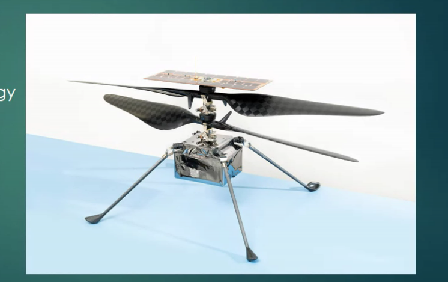

Mars Exploration
Table of Contents
1. Presentation: Rovers for Mars Exploration and Perseverance
1.1. Purpose
- Better Images, details, experimental data
- Study of Local area
1.2. Sojourner Rover
- Under Mission Mars pathfinder
- First rover for mars
- Size equivalent to microwave oven
- lasted for 85 earth days
- Landed in Ares Vallis
- Because that location looked like flooded and debris flow had occured previously
- and it was flatter region too
1.3. Spirit and Opportunity Rovers ATTACH

- two rovers (twins) made in 2004
- planned for 90 days but spirit lasted for ~6 years (2004 to 2010), opportunity is working till now > 14 years
- 4 spectrometers
- big as golf cart
- discovered about volcanism and water present
- landed on opposite positions
1.4. Curiosity Rover ATTACH

- Landed on 2012
- large as small SUV
- main objective to study
- climate
- is mars suitable for life?
- geology
- had Chemcam, Robotic Arm, Nuclear Power Source, Environmental and atmospheric sensors
- 4.8kg Plutonium dioxide (for ~14 years powers)
1.5. Perseverance Rover
- Launched on 2020 July 30 will
- Landing date Feb 18 2021
- Designed for 1 mars years (687 earth days)
- Under mission Mars 2020
- Puprose:
- ancient life
- and soil sample for possible return (main purpose to look for bio signature)
- gather rock sample
- explore a geologically diverse landing site
- Size
- 278 pound heavier than curiosity
- 10ft length, 9ft width, 7ft height
- 1025 kg (2260 pounds)
- has tube for bring back soil samples
- electricity from plutonium 238
- autopilot for TRN (Terrain Relative Navigation)
- ~24,25 camers and sensors for fast driving
1.5.1. Key Hardware
- Mastcam - Z
- panoramic and sterioscopic imaging capability
- ability to zoom
- also will determine mineralogy of martian surface
- Super Cam
- provide chemical composition analysis
- Planetary Instrument for X-ray lithochemistry (PIXL)
- x-ray use garera high-resolution images map for find-scale elemntal composition
- detailed detection and analysis of chemical elements
- Scanning Habitable Environments with Raman & Luminescence for Organics and Chemicals (SHERLOC)
- UV laser for minerals and organic compounds
- MEDA (Mars Environmatal Dynamics Analyser)
1.5.2. MOXIE Mars Oxygen ISRU (In-situ resource utilization) Experiment
- manufacture molecular oxygen using C02 in Mars (mars has >96% CO2)
- milestone experiment for human settlement
- main advantage
- oxygen for human visitors
- rocket fuel for return
1.5.3. Ingenuity (Perseverance Rover's Helicopter) ATTACH

- first ever helicopter in mars
- challenge in thin atmosphere
- purpose is to test new tech